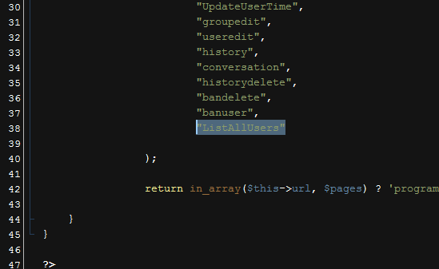
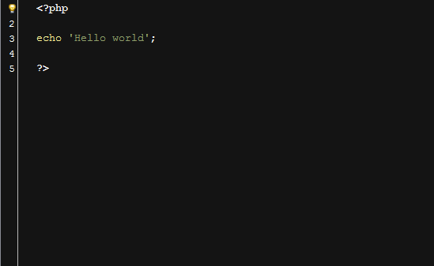
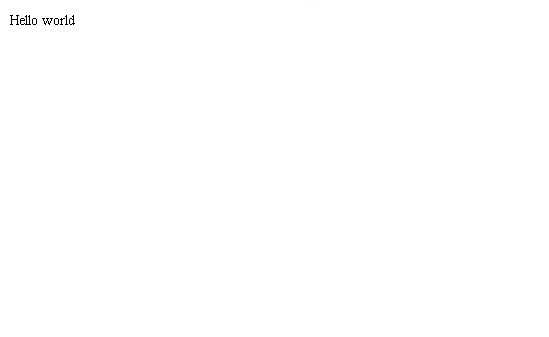

“VisitorChat” Documentation by “insis321” v1.0
“VisitorChat client support”
Created: 22/05/2011
By: Gregor Kuplenik
Email: gregor.kuplenik@insis.si
Thank you for purchasing VisitorChat. If you have any questions that are beyond the scope of this help file, please feel free to email via my user page contact form here. Thanks so much!
Table of Contents
- Installing VisitorChat
- Integrating VisitorChat
- DOM
- JavaScript
- PHP Code Explanation
- CSS
- Sound Files
- Additional support
A) Installing VisitorChat - top
VisitorChat comes with it's own installer which auto-creates all the necessary
config files and database tables.
Uploading the files
Upload the folder "VisitorChat" to your web root directory and navigate to http://yourdomain/VisitorChat/install/. Before installing your database and config files, installer will require for you to grant some permissions on "uploads" folder and "config.php" which reside in VisitorChat/ directory. Both, the "uploads" and the "config.php" file must be granted write permissions by the http service user.Installer
To install the config file and the database tables, please enter the required fields. You will have to provide Host,Username and Password for your MySQL database. Another required fields is the "Email" field. This is needed for mailing script to deliver any emails sent by the clients, when you are offline. Please note, that the emails are sent through PHP native mail() function, so you must ensure that this works on the server side.Failing to install with installer
If you by some reason fail to install the easy way (which is very unlikely to happen) you can allways install manually:- Find the "config.txt.inc" file located in VisitorChat/install/ folder and open it with your favorite text editor. Copy all the contents to VisitorChat/config.php and change the settings to fit your needs
- Now navigate to VisitorChat/install/ where you will find the database tables residing in tables.sql. Execute them on your MySQL database.
- Chmod "config.php" and "uploads" directory in VisitorChat/ directory and you are ready to go.
Deleting your install folder after installation is completed
After testing that the software works, please delete the install folder. It's not a good security practise to leave your install folder on your production sites. Though I have written the installer in a manner that once the tables were installed no config files can be overwritten, I still advise you that you delete it.B) Integrating VisitorChat - top
Made to leave as minimal trace as possible
You can integrate VisitorChat in your site by including 3 Javascript files and one CSS file in specific order:
<link href="VisitorChat/views/stylesheet/stylesheet.css" type="text/css" media="screen" rel="stylesheet"
<script language="JavaScript" type="text/javascript" src="http://ajax.googleapis.com/ajax/libs/jquery/1.5.1/jquery.min.js"></script>
<script language="JavaScript" type="text/javascript" src="VisitorChat/views/javascript/visitorchat.js"></script>
All DOM is generated by the jQuery, so there is no DOM trace in your web sites. This is especially good for blocking the BOT scripts
such as spambot etc. It also gives you some advantage in SEO so that search engines can focus on your content.
You can use the prepared "index.html" file in the root folder for exact demonstration
C) DOM - top
Client area template
In the client area, DOM is hidden inside a Javascript file.
It is built with jQuery functions and then attached to the body
of a website. You can modify it by changing the following code. Please
note that you are modifying this code on your own risk. The code is stated like this:
var $content = $("<div></div>")
.append(
$("<div></div>")
.attr("id", "talk_window")
.append(
$("<div></div>")
.attr("id", "messages")
)
.append(
$("<div></div>")
.attr("class", "text_round")
.append(
$("<textarea></textarea>")
.attr("id", "message")
)
)
)
.append(
$("<div></div>")
.attr("id", "send_email")
.append(
$("<div></div>")
.attr("class", "email")
.append(
$("<strong></strong>")
.html('Thank you for trying to contact us!')
)
.append('<br /><br />')
.append('We are currently offline, but you can send us a message using the form below!')
.append('<br /><br />')
.append(
$("<label></label>")
.html('Name')
)
.append('<br />')
.append(
$("<input />")
.attr({ "type" : "text" , "id" : "sm_name" })
)
.append('<br />')
.append(
$("<label></label>")
.html('E-mail')
)
.append('<br />')
.append(
$("<input />")
.attr({ "type" : "text" , "id" : "sm_email" })
)
.append('<br />')
.append(
$("<label></label>")
.html('Message')
)
.append('<br />')
.append(
$("<textarea></textarea>")
.attr("id", "sm_msg")
)
.append('<br />')
.append(
$("<a></a>")
.attr({ "href" : "#", "id" : "send_email_btn" })
.html('Send')
)
.append(
$("<div></div>")
.attr("id", "send_email_result")
)
.append(
$("<div></div>")
.attr("id", "send_email_loading")
.html('loading ...')
)
.append(
$("<div></div>")
.attr("class", "c")
)
.append('<br />')
)
)
.append(
$("<div></div>")
.attr("id", "register")
.append(
$("<div></div>")
.attr("class", "email")
.append(
$("<strong></strong>")
.html('Fill out your data to start chatting!')
)
.append('<br /><br />')
.append(
$("<label></label>")
.html('Name')
)
.append('<br />')
.append(
$("<input />")
.attr({ "type" : "text" , "id" : "re_name" })
)
.append('<br />')
.append(
$("<label></label>")
.html('E-mail')
)
.append('<br />')
.append(
$("<input />")
.attr({ "type" : "text" , "id" : "re_email" })
)
.append('<br />')
.append(
$("<a></a>")
.attr({ "href" : "#", "id" : "user_register" })
.html('Start chatting')
)
.append(
$("<div></div>")
.attr("id", "register_result")
)
.append(
$("<div></div>")
.attr("id", "register_loading")
.html('please wait ...')
)
.append(
$("<div></div>")
.attr("class", "c")
)
.append('<br />')
)
)
.append(
$("<a></a>")
.attr({ "class" : "talk", "href" : "#" })
.append(
$("<img />")
.attr({
"src" : "VisitorChat/views/image/comment.png",
"border" : 0,
"id" : "settings",
"align" : "absmiddle"
})
)
.append(' ')
.append(
$("<span></span>")
.attr("id", "online")
)
.append(
$("<div></div>")
.attr("id", "reminder")
)
);
Admin area templates
You can edit the admin area templates if you like. The templates are located
in the VisitorChat/admin/views/template/ folder
D) JavaScript - top
Client imports three Javascript files.
- jQuery (linked to the Google ajax server)
- Custom script visitorchat.js
- jQuery is a Javascript library that greatly reduces the amount of code that you must write.
- Most of the animation in this site is carried out from the customs scripts. You can look all the custom code
in the visitorchat.js located in VisitorChat/views/javascript
-
On the Admin area side, there are 4 custom jQuery files:
- custom.js (executes on admin landing page)
- static.js
- history.js and
- users_and_groups.js
All located in the VisitorChat/admin/js/ folder. These custom files
and functions inside of them are essential for VisitorChat to work.
We do not recommend altering them in any way, unless you are not an
jQuery expert. Modify them on your own risk.
E) PHP code explanation - top
This software utilizes MVC model so it's upgradable or extendable.
MVC is devided for frontend and backend.
Let's start from the top (backend):
- All classes are located in VisitorChat/admin/classes
- "index.php" located in VisitorChat/admin/index.php is our "Controller"
- PHP scripts located in VisitorChat/admin/program are called "Models"
- Views eg. "templates" are located in VisitorChat/admin/views/template/
Here is the MVC procedure in image for better representation:

Adding a new software extension
It makes more sense to me to show you an example of how extension (or part of the software) can be added, than just provide you the list of the functions and classes. This is how simple the operation with the this little framework is:
Let's assume we would like to add a page which will list all the Admin
users in the database. The url will be: index.php?page=ListAllUsers
1.) Open the class.Controller.php file located in classes folder and add a item with exact name ListAllUsers

Now, let's make our model file. Put a new file with exact name into "program" folder. ListAllUsers.php that is. Let's
write some simple output to it:

Now we have initialized Controller and Model+View object. Model+View because
we have echoed some string directly into model. We could separate this
like it's done in some other parts of the code, by including any html file from
views/template folder. Now we can navigate to index.php?page=ListAllUsers and we get the output

Now you understand how this MVC works. All PHP code is documented and explained in each file. Comments are written in PHPDoc style so you can even generate a documentation of functions and classes. If you would like to extend I recommend using Aptana studio or Netbeans or some other similliar software. You'll get a list of all functions, classes with full explanations.
Language files
I tried my best to offer language translation, so it can be easly modified to your language. Navigate to the root of VisitorChat software and find file "language.php". Modify it to your needs. This is only available for backend, because the frontend is jQuery generated. You can translate that by changing the code in VisitorChat/views/javascript/visitorchat.js explained in upper section.
F) CSS files - top
- CSS file for admin backend: VisitorChat/admin/views/stylesheet/
- CSS file for admin backend: VisitorChat/views/stylesheet/
G) Sound Files - top
When you receive a message a sound file is played. Sound files are located in the root folder of VisitorChat. To ensure maximum compatibility with browsers a sound file must be made in MP3 and OGG format.
H) Additional support - top
If you have any question, bug to report or any type of support, please address to VisitorChat forum and I'll make my best to help you: VisitorChat Forum
Once again, thank you so much for purchasing this item. As I said at the beginning, I'd be glad to help you if you have any questions relating to this theme. No guarantees, but I'll do my best to assist. If you have a more general question relating to the themes on codecanyon, you might consider visiting the forums and asking your question in the "Item Discussion" section.
Gregor Kuplenik